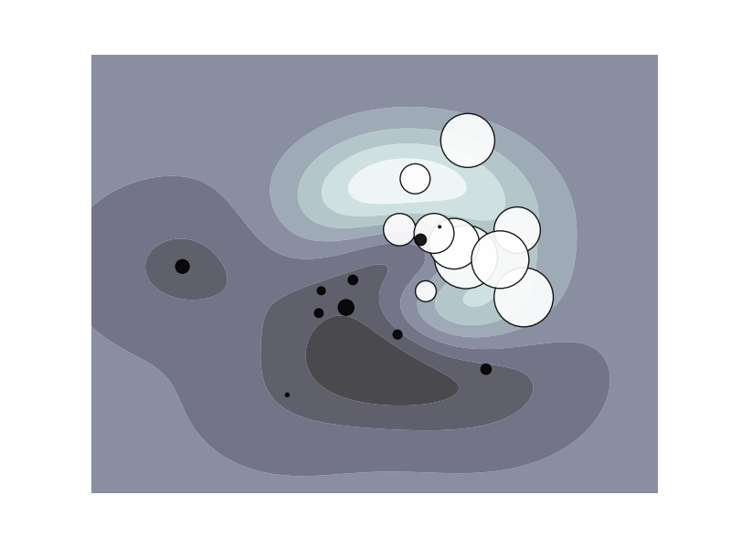

SVM: Weighted samples¶
Plot decision function of a weighted dataset, where the size of points is proportional to its weight.
Python source code: plot_weighted_samples.py
print __doc__
import numpy as np
import pylab as pl
from sklearn import svm
# we create 20 points
np.random.seed(0)
X = np.r_[np.random.randn(10, 2) + [1, 1], np.random.randn(10, 2)]
Y = [1]*10 + [-1]*10
sample_weight = 100 * np.abs(np.random.randn(20))
# and assign a bigger weight to the last 10 samples
sample_weight[:10] *= 10
# # fit the model
clf = svm.SVC()
clf.fit(X, Y, sample_weight=sample_weight)
# plot the decision function
xx, yy = np.meshgrid(np.linspace(-4, 5, 500), np.linspace(-4, 5, 500))
Z = clf.decision_function(np.c_[xx.ravel(), yy.ravel()])
Z = Z.reshape(xx.shape)
# plot the line, the points, and the nearest vectors to the plane
pl.set_cmap(pl.cm.bone)
pl.contourf(xx, yy, Z, alpha=0.75)
pl.scatter(X[:, 0], X[:, 1], c=Y, s=sample_weight, alpha=0.9)
pl.axis('off')
pl.show()